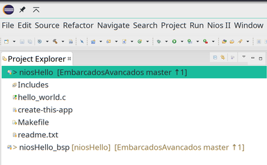
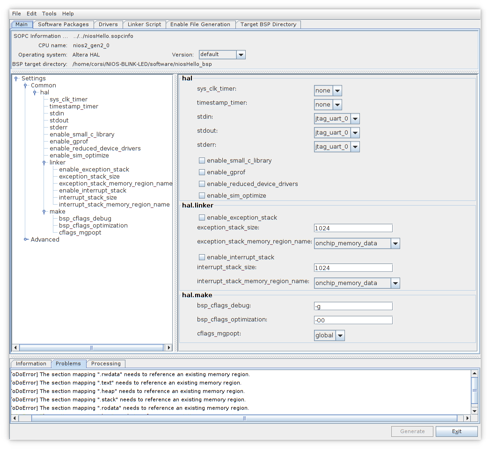

Nesse tutorial iremos criar e customizar um soft processor (sistema embarcado com um processador e periférico), embarcar na FPGA e escrever um código para ele. Ao final, vamos ter os mesmos LEDs que do projeto anterior, com operação simular, mas agora sendo controlados por um programa e não por um hardware dedicado.
Para seguir esse tutorial, é necessário:
Hardware: DE10-Standard e acessórios
Softwares: Quartus 18.01
Documentos: DE10-Standard_User_manual.pdf
Entrega no git:
Pasta:
Tutorial-FPGA-NIOS
Soft processor¶
Projetos em HDL não são muito flexíveis, cada alteração no projeto implica na modificação do Hardware o que não é algo tão simples. Além da dificuldade de implementar as modificações, temos o tempo de teste e compilação do projeto que não é algo imediato.
Uma solução para tornar o projeto mais flexível é o de tornar os LEDs controlados não por uma lógica dedicada mas sim por um hardware que possa executar uma série de instruções: um microcontrolador.
Como a FPGA pode implementar circuitos lógicos digitais, é possível sintetizarmos um microcontrolador na FPGA e fazermos esse uC controlar os LEDS (Sim:exclamation: o uC é um código em HDL). Agora a alteração na lógica de controle depende do programa que será executado no uC, tornando o projeto muito mais flexível.
- point_right
O ARM também é um código em HDL:
Processadores que são sintetizáveis em dispositivos lógicos programáveis (FPGA,..) são chamados de Soft Processor. Diversos são os Soft Processors disponíveis comercialmente/ open source:
- point_right
`LEON:
Gaisler <https://www.gaisler.com/index.php/products/ipcores/soclibrary>`__ (aerospacial/ SPARCV8)
…
A adição de periféricos e funcionalidades extras ao Soft Processor (podemos por exemplo colocar um gerenciador de memória, timers, controlador de rede, …) faz com que o sistema passe a ser chamado de System On Chip (SoC).
- point_right
Hard Processor são os microprocessadores tradicionais,
que não sofrem alteração de HW.
Existem SoCs que não são implementados em FPGAs, mas ainda assim concentram uma série de outros componentes em um único chip, é o caso dos SoCs utilizados em celulares. Esses dispositivos, muitas vezes utilizam SoCs que possuem além da parte de processamento, sistemas responsáveis pela comunicação pela: interface gráfica; gestão des câmeras; comunicação 4g; …. A Qualcomm é uma das empresas lideres do setor com o dispositivo SnapDragon.
Plataform Designer¶
- point_right
O Platform Designer era chamado de QSYS, ainda da para
achar muitas coisas com essa referência
O Platform Designer é um software disponível pela INtel e integrado no Quartus que possibilita desenvolvermos sistemas complexos de forma simples e visual. Com ele podemos adicionar e conectar Intellectual property cores (IP Core) para desenvolvermos uma aplicação de maneira rápida e visual.
Os IP cores podem ser da própria Intel, de terceiros ou proprietários.
- point_right
Quer se aprofundar? Tem um curso online `Introduction
to Platform Designer <https://www.intel.com/content/www/us/en/programmable/support/training/course/iqsys101.html>`__
NIOS¶
NIOS é o soft processor fornecido pela Altera-Intel e integrado na ferramenta. O NIOS é baseado na arquitetura do MIPS com arquitetura de 32 bits e controle de exceções, barramento de comunicação, controle de memória, … .
A figura a seguir descreve os componentes essenciais do NIOS (azul) e o que é customizável (cinza).
Nios block diagram¶
O NIOS suporta que novas instruções sejam adicionadas a seu instruction set, essas instruções são implementadas em HDL e inseridas no core de forma transparente ao desenvolvedor. Existem graus de instruções customizadas: Combinacional; Multiciclo; Estendidas; Que faz uso do banco de registradores original ou aquelas que adicionam novos registradores. Para maiores detalhes consulte o documento :
Criando um simples SoC¶
Nesse etapa iremos adicionar um processador e a infraestrutura mínima necessária para sua operação, iremos incluir no projeto:
Uma interface de clock
Uma memória (de dados e programa)
O processador (NIOS II)
Um periférico PIO (para gerenciar saídas digitais)
Um JTAG-UART, para suportar debug via print.
Para começarmos:
Copie a pasta do projeto da
Entrega-1renomeando paraTutorial-FPGA-NIOSAbra essa nova pasta
Tutorial-FPGA-NIOSno QuartusAbra o Platform Designer:
Quartus :arrow_right:
Tools:arrow_right:Platform Designer
Adicione os seguintes periféricos:
On-Chip Memmory (RAM or ROM Intel FPGA IP)Type: RAM
Total Memory size: 32768 bytes
JTAG UART Intel FPGA IPDefault
PIO (Parallel I/O) Intel FPGA IPWidth: 6
Direction: Output
NIOS IIType: NIOS II/e
Você deve obter algo similar a:

Clock e Reset¶
Conectando Clock e Reset¶
Os periféricos do Qsys são como sistemas independentes (pensem em cada bloco é como um chip), que necessitam ser conectados no mínimo a um Clock e a um Reset. O sistema pode operar em diversos domínios de clocks e resets diferentes, portanto essa conexão deve ser feita pelo desenvolvedor.
Pense nessa etapa como sendo similar ao port map do VHDL, porém em um
nível muito mais superior. O Qsys será responsável por fazer a
compatibilidade dos sinais para nós. Conecte todos os sinais de clocks e
reset aos sinais clk e clk_rst do periférico clk_0, conforme
figura a seguir:
Clock e Reset¶
Conectando barramento¶
A Altera define dois tipos de barramento de dados para o Qsys: Avalon e AXI. O barramento Avalon é a principal maneira de conectar um periférico ao NIOS (processador), já o AXI é o padrão de barramento do ARM, que será utilizado posteriormente.
O barramento Avalon define basicamente dois tipos de comunicação: Memory Mapped (MM) e Avalon Streaming Interface (ST), conforme descrição a seguir extraído da documentação :
O principal barramento do NIOS é o memory mapped, e todo periférico conectado ao NIOS (processador) deverá possuir esse barramento. A Altera disponibiliza conversores e adaptadores para podermos transforma uma forma de comunicação na outra.
Em um futuro breve nós iremos desenvolver um periférico proprietário que será conectado nesse barramento. Melhorando o entendimento do sistema.
Note que o NIOS possui dois barramentos do tipo MM: data_master
e intruction_master. Como o NIOS II é um processador baseado no MIPS
harvard
ele possui dois barramentos, um para dados e outro para o programa
(instrução).
Nessa nossa topologia de hardware, só possuímos uma única memória (on_chip_memory) que será a principio compartilhada entre o dado e programa (temos uma perda de eficiência aqui, já que a memória só poderá ser acessada por um barramento por vez), depois vamos melhorar isso!
Vamos portanto conectar todos os periféricos (PIO, UART e
OnChip Memory) ao barramento data_master e vamos conectar
somente a memória (OnChip Memory) ao barramento de instrução
(instruction_master), resultando na montagem a seguir:

Mapa de memória¶
Após realizarmos as conexões, devemos especificar o endereço de memória de cada periférico. São duas as maneiras de realizarmos isso: manual ou automática.
Na manual, pode-se alocar os periféricos em endereços de memória a sua escolha, tomando os cuidados para não haver sobreposição dos endereços. Na automática, deixamos para a ferramenta alocar os periféricos nos endereços corretos.
Para realizar a alocação automática: System :arrow_right:
Assign Base Addrress. Para visualizar o resultado, clique na aba:
Address Map

Automatic Memmory Map¶
Configurando NIOS¶
Agora precisamos configurar o NIOS para utilizar a memória recém conectada a ele, de um clique duplo no NIOS, para abrir a aba: Parameters.
Em Vector :arrow_right: configure:
Reset vector memory: onchip_memory
Execption vector memory: onchip_memory

O nome onchip_memory pode alterar de acordo com o seu projeto e o endereço também (isso depende da ordem na qual os componentes foram inseridos).
Export¶
A coluna export do Platform Designer indica quais sinais serão exportados para fora do sistema, pense nesses sinais como sendo os que terão contato com o mundo externo (serão mapeados para os pinos no topLevel).
De um clique duplo na coluna export na linha do sinal external_connection do component PIO e de o nome de LEDs para esse sinal.
Finalizando¶
Ao final de tudo você deve obter algo como a figura a seguir:
Qsys final¶
Salve o projeto com o nome niosHello.qsys na pasta do projeto e
clique em Generate HDL, para o Qsys gerar o projeto.
Utilizando o componente¶
Ainda no Qsys, clique em: Generate :arrow_right:
Show Instatiation Template, selecione VHDL como linguagem HDL. E
você deve obter algo como:
- point_right
Anote isso, iremos utilizar na próxima etapa!
component niosHello is
port (
clk_clk : in std_logic := 'X'; -- clk
reset_reset_n : in std_logic := 'X'; -- reset_n
leds_export : out std_logic_vector(5 downto 0) -- export
);
end component niosHello;
u0 : component niosHello
port map (
clk_clk => CONNECTED_TO_clk_clk, -- clk.clk
reset_reset_n => CONNECTED_TO_reset_reset_n, -- reset.reset_n
leds_export => CONNECTED_TO_leds_export -- leds.export
);
Isso é um atalho de como devemos utilizar esse componente no nosso
projeto. Esse trecho de código indica que o projeto recém criado no Qsys
possui três interfaces externas: clk_clk, reset_reset_n e
leds_export. Esse sinais terão que ser mapeados no topLevel para
seus respectivos pinos.
esse nomes podem mudar no seu projeto!
O esquemático (gerado pelo Platform Designer :arrow_right: View
:arrow_right: Schematic) ilustra o SoC recém criado e suas
interfaces:

Schematic¶
Finalizando¶
Clique em finish e deixe tudo como o padrão, agora o qsys irá criar o sistema e todos os componentes que nele foi configurado. O Quartus dará uma alerta indicando que é necessário incluir alguns arquivos no Quartus para que ele tenha acesso ao projeto recém criado no Qsys:

Add arquivos¶
No Quartus: Project :arrow_right: Add/remove files in project e
adicione o arquivo:
niosHello/synthesis/niosHello.qip
Resultando em:

Files¶
Modificando o topLevel.vhd¶
Agora é necessário modificar o topLevel.vhd para incluir o
componente niosHello recém criado. Note que não estamos utilizando o
sinal de reset (o _n indica que o reset é negativo, ou seja, em
0).
library IEEE;
use IEEE.std_logic_1164.all;
entity topLevel is
port (
-- Gloabals
fpga_clk_50 : in std_logic; -- clock.clk
-- I/Os
fpga_led_pio : out std_logic_vector(5 downto 0)
);
end entity topLevel;
architecture rtl of topLevel is
component niosHello is port (
clk_clk : in std_logic := 'X'; -- clk
reset_reset_n : in std_logic := 'X'; -- reset_n
leds_export : out std_logic_vector(5 downto 0) -- export
);
end component niosHello;
begin
u0 : component niosHello port map (
clk_clk => fpga_clk_50, -- clk.clk
reset_reset_n => '1', -- reset.reset_n
leds_export => fpga_led_pio -- leds.export
);
end rtl;
Compile o projeto e analise o RTL, verifique se está de acordo com o esperado.
Grave o projeto na FPGA.
Programando o NIOS - Soft processor¶
Agora que temos o projeto criado e a FPGA gravada com o novo hardware, que inclui o processador NIOS. Precisamos gerar e gravar um programa que realiza o controle dos LEDs. Para isso iremos abrir a IDE NIOS Software Build for Eclipse (SBT) que possui todo o toolchain necessário para desenvolvermos firmware para o NIOS.
No Quartus: Tools :arrow_right: Nios II Software Build ... e uma
interface do eclipse será aberta.
Quando desenvolvemos projetos para sistemas SoCs temos um problema: o hardware não é padronizado. Como tudo é customizado existe um problema que deve-se ser tratado, a interface entre o hardware criado e o toolchain de software (compilador, linker…).
A Altera resolveu isso criando uma camada de abstração de hardware (Hardware Abstraction Layer - HAL) ou como a Intel chama: Board Suport Package (BSP), na qual extrai-se informações do Platform Designer para ser utilizado pela toolchain de compilação (GCC). Quando formos criar um projeto no NIOS II - Eclipse, dois projetos serão criados: Um que contém o firmware a ser gravado no NIOS e outro (BSP) que contém informações relevantes sobre o Hardware para uso no firmware e toolchain.

SBT¶
- point_right
Para mais informações:
https://www.altera.com/products/processors/design-tools.html#SBT
Criando o projeto¶
No Quartus :arrow_right:
Tools:arrow_right:NIOS II - EclipseNo NIOS II - Eclipse :arrow_right:
File:arrow_right:NIOS II Application and BSP from template
SOPC Information File Name:Na pasta do projeto, procure pelo arquivo :
niosHello.sopcEsse arquivo é criado pelo Qsys quando o projeto é compilado, e está na pasta do projeto.
Project name:
niosHelloApós avançar o SBT irá criar duas pastas de projeto :
niosHello: firmware a ser embarcadoniosHello_bsp: Board support package para o firmware

Analisando e configurando o bsp¶
No Project Explorer do Eclipse, clique com o botão direito no:
Project Explorer:arrow_right:niosHello_bsp:arrow_right:NIOS II:arrow_right:bsp Editor
Isso abrirá uma interface de configuração para o bsp. Diversas são as opções de configurações, algumas delas :
sys_clk_timer: periférico utilizado para bibliotecas de delay (não inserimos no Platform Designer)timestamp_timer: periférico que seria utilizado pelo timestampstdin,stdout,sterr: periférico utilizado pelo stantard IO do C, no nosso caso:jtat_uart_0(poderia ser outro).
Note que a região de memória do stack já está configurada para a onchip_memory. Aqui teríamos a opção de mapear para outro local (no caso do sistema possuir outras memórias, tais como memórias DDR externas a FPGA).

Jtag-UART small driver¶
Note que no nosso projeto no QSYS o periférico jtag-uart não teve seu sinal de interrupção conectado no NIOS, isso dificulta o acesso a uart, já que o firmware não será interrompido caso um novo dado chegue (gets) ou na transmissão (puts). O driver deve ficar fazendo um polling no periférico para verificar o envio e recepção dos dados. Para isso funcionar, devemos ativar uma opção no driver do jtag_avalon no bsp:
BSP Editor:arrow_right:Drivers:arrow_right:jtag_uart:arrow_right:enable_small_driver

Jtag Small Driver¶
Gerando o bsp¶
Toda vez que o bsp for editado ou o hardware alterado (qsys) deve-se regenerar o bsp :
De volta no eclipse, devemos gerar os arquivos bsp. Para isso clique em:
niosHello_bsp :arrow_right: NIOS II :arrow_right:
Generate BSP
Embarcando !¶
Com o bsp editado abra agora a pasta niosHello e note que existe
inicializada com um arquivo: hello_world.c que imprime via JTAG-UART
uma string. Insira o código a seguir no eclipse:
#include <stdio.h>
int main()
{
printf("Hello from Nios II!\n");
return 0;
}
Com o hello_word.c aberto (é necessário para o eclipse saber qual
projeto você quer embarcar), clique em: Run :arrow_right: Run
:arrow_right: NIOS II Hardware. Isso fará com que a aplicação seja
descarregada na memória do Qsys que alocamos para o Nios e que o
hardware seja reiniciado para executar o firmware. Quando o firmware for
executado, abra a aba do eclipse NIOS II console:
printf¶
Blink LED¶
Edite main para conter o código a seguir:
#include <stdio.h>
#include "system.h"
#include <alt_types.h>
#include <io.h> /* Leiutura e escrita no Avalon */
int delay(int n){
unsigned int delay = 0 ;
while(delay < n){
delay++;
}
}
int main(void){
unsigned int led = 0;
printf("Embarcados++ \n");
while(1){
if (led <= 5){
IOWR_32DIRECT(PIO_0_BASE, 0, 0x01 << led++);
usleep(50000);
}
else{
led = 0;
}
};
return 0;
}
Embarque no NIOS e veja o resultado nos LEDS!